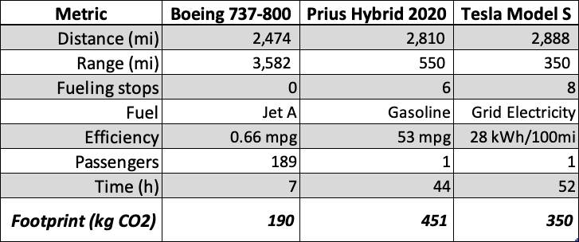

23. Earth is getting warmer. So what? [Continuing Installment 6; Part 1]
2021-10-24
I’m Jonathan Burbaum, and this is Healing Earth with Technology: a weekly, Science-based, subscriber-supported serial. In this serial, I offer a peek behind the headlines of science, focusing (at least in the beginning) on climate change/global warming/decarbonization. I welcome comments, contributions, and discussions, particularly those that follow Deming’s caveat, “In God we trust. All others, bring data.” The subliminal objective is to open the scientific process to a broader audience so that readers can discover their own truth, not based on innuendo or ad hominem attributions but instead based on hard data and critical thought.
You can read Healing for free, and you can reach me directly by replying to this email. If someone forwarded you this email, they’re asking you to sign up. You can do that by clicking here.
If you really want to help spread the word, then pay for the otherwise free subscription. I use any fees to increase readership through Facebook and LinkedIn ads.
Today’s read: 12 minutes.
Below is an excerpt from a conversation with a modern-day business leader in energy technology. See if you can understand his argument, and then consider the ramifications.
Elon Musk on the Joe Rogan Experience, Episode #1609 (February 15, 2021). Starting at 2h 38 m in to the show.
Musk: My top recommendation honestly would be just to have a carbon tax. Like, the economy works great, like, prices and money are just information. Prices are information. If the price is wrong, the economy doesn't do the right thing. So, we’ve got basically an unpriced externality in the carbon concentration in the oceans and atmosphere. It's kind of like not paying, like, if you're not paying for garbage removal or something like [that], okay everyone's going to throw garbage in the street. It's, like, garbage removal is free. But it's, like, there's a little bit of, like, okay, garbage removal isn't free. You’ve got to pay a little bit for this and because we're not paying for the CO2 capacity of the oceans and atmosphere, we have in what economics is called an unpriced externality, so the market is unable to respond to an unpriced externality. If we just put a price on it, the market will react in a sensible way. But because we don't have a price on it and it's just behaving badly.
Rogan: So theoretically how would you put a price on that? Like, would you look at various industries and how they contribute to the CO2…?
Musk: Yeah. I mean just put it at the point of consumption.
Rogan: … and tax it.
Musk: It ends up being electricity and gasoline, pretty much. Now, you can make this a non-regressive tax. You could say, like, “Okay, well, if somebody's, like, driving around a lot and they're low income, it's, like, great. Give them a rebate.” You know, so it's, like, give a tax rebate, that's the way to do it.
Rogan: And then the market will be forced to respond to the fact…
Musk: The market just does things automatically based on pricing. So markets work great if the pricing is correct. It's only when something… You have a tragedy of the commons, and the price is not there that the market does not respond, nor would you expect it to. You know, so, if you have, like, the public toilets problem whereas, like, nobody's responsible for it, nobody's paying for it. It's, like, okay, well, all the toilets are not good. So, as soon as you put a price on it, the right thing will happen automatically.
Rogan: Has there been a response to this, like, is this something…?
Musk: I talked to the Biden administration, incoming administration, and they were like, “Well, this seems too politically difficult.”, and I was, like, “Well, this is obviously a thing that should happen, and by the way, SpaceX would be paying a carbon tax too.”
Rogan: Sure.
Musk: So I’m, like, you know, I'm, like, I think we should pay it too. It's not like we shouldn't have carbon-generating things, it just there's, “God, there should be a price on this stuff.”
Rogan: And that would encourage people to make either carbon…
Musk: It would automatically fix the problem. No. For sure. You know, just think about, like, taxes. It's like, you know, here we are drinking alcohol. Now, taxes on alcohol and tobacco are higher than on let's say fruit and vegetables, okay? Because everyone knows, like, fruit and vegetables are good for you and alcohol and tobacco are not good for you. So, we're like “Yeah. You should probably bias the taxes towards alcohol and tobacco, have higher taxes on alcohol and tobacco and lower taxes on fruits and vegetables.” That's just sensible. Like, same thing goes for energy.
Rogan: Yeah, that seems very reasonable. I don't understand how that would be politically difficult.
Musk: I don't know. I talked to the incoming Biden administration. I was, like, I just thought, well for sure. Like this, you know. I mean it's, like, half the reason they got elected.
Rogan: And even some sort of an incremental increase over time…
Musk: Yeah, exactly. We don't need to … If you just say it's coming, people will automatically make the changes.
Rogan: That seems so reasonable.
Musk: Yeah, I agree.
Musk relies on Adam Smith and the invisible hand to solve the problem, like magic. Yet, Musk believes that a technology solution still needs to be developed: At around the time of this podcast, Musk also announced a $100M XPrize competition for economic carbon capture at scale.1 [Elon, if you’re reading this, you can close the competition—send me an email, and I’ll provide you with wire transfer instructions!]
Note that Musk is entirely, like, running the interview with Rogan! He suggests with a straight face (perhaps lubricated with alcohol) that a carbon tax is a self-evident truth, an obvious approach to control emissions. This suggestion is illogical and relentlessly self-serving. This passage even ends with Rogan stating that the approach is “so reasonable”, and (of course) Musk agrees!
If you haven’t thought it through or read my earlier installments, here’s the illogic: With such a carbon tax, then drivers of gasoline vehicles would have to pay more, directly (probably at the pump), while drivers of electric cars (and other consumers) would have to pay higher rates, across the board. Score one for Musk’s other company, Tesla. Where does the money go? Into the Treasury, so governments “win” because they collect more “sin” taxes. But “sin” taxes don’t make everyone an angel. They are a premium paid by those who can afford to pay. Using carbon taxes to eliminate emissions would be like raising alcohol taxes to the point that no one could afford to drink! As I’ve pointed out before, asking governments to control carbon emissions, in the long run, is inevitably a losing proposition.
Musk further asserts that he’d be willing to have his company, SpaceX, pay the tax. But carbon taxes paid by passengers on a vanity flight from Point A to Point A certainly won’t reduce the number of flights or the emissions they create! Another problem: Musk argues that the carbon tax is like “garbage collection”. So, he hasn’t realized that the engineered cost of just the energy for this particular form of garbage collection equals or exceeds the original price of the trash! Nobody’s going to pay that in the long run, and corporations would likely find loopholes or accounting tricks to minimize their actual cash outlay. Even in the fantasy world where it becomes enacted, no government entity will redirect the cash toward long-term atmospheric remediation when there are more “pressing” needs for the money.
Elon, give us all a break and consider real solutions that leverage, rather than destroy, capitalism and the climate.
As the sun comes up this morning, there’s still only one practical solution to direct air carbon capture, and by extension, to climate change. The sooner we start implementing it, the sooner we can solve other pressing global problems. But if we continue to perseverate, it will only get more challenging, and the situation will worsen.
Imagine that climate change (and our options to control it) as a small kitchen fire. We also have the pieces of a single fire extinguisher that needs to be assembled in the corner. We can debate whether this fire is good or bad, how fast it might spread, and whether we can design a better extinguisher or reduce the amount of combustible material in the house. Or we can assemble and aim the extinguisher and deal with the consequences once the fire is controlled. My choice of approach is clear. What’s yours?
So, I’ve put a potential trillion-dollar, game-changing business proposal out into the public domain. While I’ve successfully patented many other ideas, I’m intentionally forgoing that protection now. I work alone, and it should be apparent that I am not seeking personal gain, either financial or reputational. Further, it should also be clear that my ego is pretty well-established. The opinions of others don’t particularly influence it. So, if Elon Musk (or President Xi) builds the solution and makes more stacks of cash without assigning credit, I’m cool with that. But, while these and other influential personalities have the intellectual and financial resources to capitalize on the proposal, they act as if they don’t understand the problem. They “trust the science” without digging beneath the surface and imagining the problem that needs to be solved. That has to change.
In this installment, let’s contemplate what we want from a “carbon footprint” measurement. On the one hand, we could consider it an absolute measure parsed out to each individual, say, the number of kilograms of carbon dioxide that we are responsible for, individually. In that case, any one of us can quickly zero out our footprint (as a thought experiment only, not an actual choice!) by committing suicide. On the other hand, it’s better to consider the carbon footprint as a relative measurement to help provide individuals with the data to choose more environmentally friendly options. As such, it’s going to have to be taken case-by-case, with clear, shared limitations on each option. For the uninitiated reader, it helps to picture energy within the same mathematical framework as finance. As with a financial decision (like purchasing a car), we must consider both hidden costs and transaction costs in an energy decision (like transportation alternatives). And any decision involves tradeoffs—nothing is ever free.
So let us begin.
Suppose you want to travel from New York to Los Angeles, and your choices are,
Fly on a commercial airliner
Drive a Prius
Drive a Tesla
Which choice has the most significant carbon footprint? Which one has the smallest? Without peeking below, please write down your answer, or at least bookmark it mentally.
I think that the average American might say that Tesla is “zero emissions”. It says so, right on the license plate frame. And the commercial airliner would have the most significant footprint. Look at how much fuel a plane burns! But, let’s do the math (sorry!) and see what it says.
Let’s assume that we’re talking about moving you and a carry-on bag from JFK to LAX. This thought experiment implies that the car has only a single passenger, you. For the flight, let’s assume that you take the last seat on a full plane. I think it’s fair to make these simplifying assumptions because if the flight were not full, it would still fly and burn the same amount of fuel. We want to evaluate the possible choices made by individuals on the margin, and if the option itself depends on other people, then the problem becomes a lot more complicated.
The typical aircraft for the JFK-LAX route is a Boeing 737-300, but more efficient models are available, like the 737-800, and these will begin to replace older stock over time, just like the Priuses and Teslas have begun to replace older “pure” internal combustion vehicles. It’s also a handy benchmark since a nice calculation of the aircraft’s fuel consumption has been posted. We will assume, further, that it’s a direct flight with no weather diversions, headwinds, or tailwinds, all of which can affect fuel consumption. Since we’re using manufacturer-reported efficiencies for the vehicles, I think that’s fair.
For the Prius, let’s choose the latest gasoline-powered hybrid vehicle rather than the plug-in hybrid, so we don’t have to complicate things by switching between different energy sources—it’ll simply be an example of a modern, highly efficient, but conventionally fueled vehicle. For either car, let’s also assume that you’re a driver with infinite stamina so that, except for fueling stops, the car follows the shortest route prescribed by Google Maps and refuels at or before it reaches its listed range. For the Prius, no additional mileage for fueling is assumed, and we’ll assume that 10 minutes per stop.
To deal with the carbon emissions of an EV like a Tesla Model S is complicated. While an EV could produce no emissions in theory, in practice, the vehicles are fueled with electricity off the grid, with unbranded electrons. In other words, at the connection point, we cannot specifically choose electrons branded “renewable”. If the Tesla isn’t charging, then the power isn’t generated. If it’s charging during a period of peak demand, you can bet that there’s a natural gas-powered turbine that’s generating the extra energy. So, even though Tesla claims that their superchargers provide fully renewable power unless they operate on a private grid, that’s just a marketing gimmick. So, while tailpipe emissions for the Tesla are zero, the electricity needs to be generated somehow, and we still use carbon-based fuels in practice. But how much?
Again, “It depends.” The emissions per kWh vary dramatically state-to-state and hour-by-hour, so let’s make another assumption that for every stop, the Tesla uses in-state electricity and that its carbon footprint reflects the annualized emission for that state’s electricity mix (2019). Further, while they are becoming more common, Tesla Superchargers require detours and time for charging, so the routing and travel time will be somewhat longer. Charging to 80% takes 40 minutes, but for simplicity, let’s assume that it takes an hour to charge to 100% at each stop.
That’s a lot of assumptions, but clarity is necessary so that the choices are clear and the dependencies of the conclusions are transparent. So, what do we calculate?

See below for specific references.
Bottom line: If you find yourself in this specific situation, and there’s a scheduled flight, take it. You’ll get there faster and with a smaller carbon footprint than if you drive. But if you have the time and can carpool with two or more people in the car, then driving might make sense. If you really want to minimize your carbon footprint and still travel from JFK to LAX, then get a Tesla with a trailer hitch, and bring your own solar array for charging. But you may need to wait days for each charge, rather than only an hour! [See this article for a more detailed calculation. To achieve the power of a supercharger, you’d need to tow approximately 15 semitrailer beds of solar panels for one car, or you could have just one and wait 15 times as long…]
As Musk points out, the market works just fine. In this case, the efficiency of mass transportation outstrips that from electrification for personal vehicles, perhaps explaining why people prefer to fly from JFK to LAX! It also explains why, in my younger days, I chose to drive my family of five from Massachusetts to Florida for vacation rather than fly—it cost less and was worth the time.
As a postscript, I considered traveling by horse as an alternative mode of transportation that might depict the “before times, in other words, before using geologic carbon for energy. But, that’d open a whole can of worms: Some have argued that mammals are net zero-emission, but that is non-scientific nonsense. All carbon atoms are equal, and energy still has to be used. Even though the power of a horse originates in renewable biomass, using it produces carbon dioxide that could, in principle, have gone unused. And, for sure, the other side of the renewable cycle is unaffected: Photosynthesis doesn’t care where the carbon dioxide came from!
Supercharger locations in Somerset, PA; Dayton, OH; Brentwood, MO; Tulsa, OK; Amarillo, TX; Santa Fe, NM; Holbrook, AZ; and Baker, CA. Statewide total electricity generation (2019) from “Total Electric Power Industry” and total CO2 generation from “Total Electric Power Industry” from the U. S. Energy Information Agency (https://www.eia.gov/electricity/data/state/) converted to kg/kWh. Specifically, “Net Generation by State by Type of Producer by Energy Source (EIA-906, EIA-920, and EIA-923) Final 2020 data re-released on October 8, 2021” (generation) and “U.S. Electric Power Industry Estimated Emissions by State (EIA-767, EIA-906, EIA-920, and EIA-923)” (emissions).